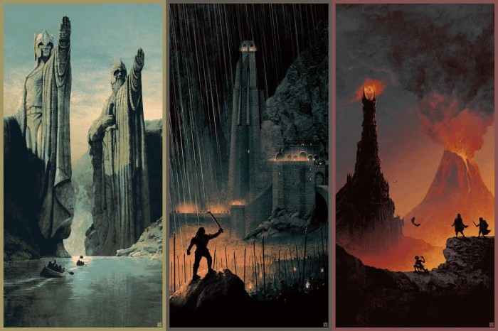

As a kid I grew up watching anime and cartoons in most of my freetime, shows such as Naruto, and bleach. Naruto being one of my favorites due to the nostalgia that I have for it

Along with Anime I also consume a heavy amount of literature, the fantasy genre contains most of my favorite go to novels.
From a very young age I was obsessed with obsurd monsters with complex powers, and magical entities, I love wizard archetypes
It would only make sense that Authors such as J.R.R Tolkein, Terry Brooks, and Leigh Bardugo would often find their way into my reading pile
As a young adult I grew to love comics such as: Chris Farley, John Candy, and Gene Wilder, I learned to value older films for what they were as snapshots of their era.
Some of My Favorite Movies Include: